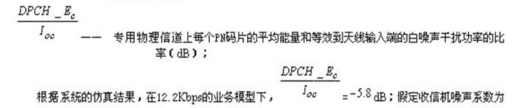
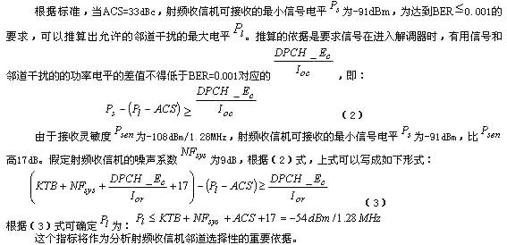
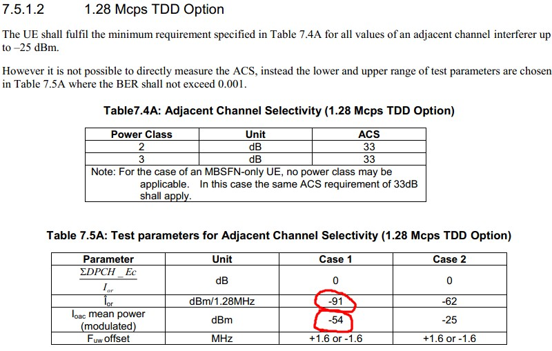

TD-SCDMA终端在接收到有用信号的同时，还会接收到邻道上的信号（视为干扰），为了能够正确的接收有用信号，接收机必须要对邻道干扰信号进行有用的抑制。接收机的这一特性可用邻道选择性来衡量。
相邻信道选择性（ACS）是指有相邻信道信号存在的情况下，基站接收机接收有用信号的能力。
定义为指定的接收机滤波器在该信道上的衰减和对相邻信道信号衰减的比率。
基站接收机的具体要求见下表：
| 参数 | 值 |
|---|---|
| 参考测量信道数据速率 | 12.2kbit/s |
| 有用信号平均功率 | -104dBm |
| 干扰信号 | -55dBm |
| 已调干扰信号频偏 | 1.6MHz |
邻道选择性靠接收机的信道滤波器保证，要求信道滤波器对邻道干扰的抑制要大于（-55dBm-邻道干扰噪声功率）
根据3Gpp标准，接收机的输入功率为 Pin=-104dBm时，可接收的总的噪声功率（包括干扰）为
Psum=P-Ec/Io-Ma=104dBm+5.8dB-1.8=-100dBm
可参考资料： Ec-Io_Eb-Nt_SNR_C-I等解释
PN=PNo(-113dBm/1.28MHz)+NF(7dB)=-106dBm，占总的噪声干扰功率的1/4。
因此，邻道干扰占总功率的3/4，即PI=-101.25dBm。
则要求信道滤波器对邻信道干扰的抑制应>=101.25dBm-55dBm=46.25dB。

附上3Gpp对UE的邻道选择性的要求:

邻道选择性的好坏体现了射频收信机抑制邻道干扰能力的强弱。根据设计要求，当邻道干扰电平为-54dBm，在保证BER≤0.001时，射频收信机最小接收电平不得低于-91dBm。射频收信机邻道选择性测试的方法如下：通过射频合路器向射频收信机输入TD-SCDMA射频通带信号和邻道调制干扰信号，邻道干扰信号与有用信号的中心频率相差1.6MHz，调制方式和有用信号的调制方式相同，功率电平PAC为-54dBm。把射频有用信号的功率电平PRF-in设置为一个初始值（如-80dBm），借助物理层程序分析计算，求出信-噪比。通过PC机的控制改变输入射频有用信号的功率电平PRF-in，找到使BER开始小于0.001对应的输入信号的功率电平。